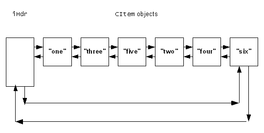

|
| |
The following code fragments show how a doubly linked list can be
constructed and manipulated. The list consists of CItem objects.
In this example, a CItem object can contain an item of text
implemented as an HBufC. The CItem objects can form
elements of a doubly linked list using the iDlink data member as
the link object.
The class is declared as:
class CItem : public CBase
{
public :
static CItem* NewL(const TDesC& aText);
static CItem* NewLC(const TDesC& aText);
virtual ~CItem();
public :
static const TInt iOffset;
private :
void ConstructL(const TDesC& aText);
private :
TDblQueLink iDlink;
HBufC* iText;
friend class CXy;
};
The CItem member functions are implemented as:
const TInt CItem::iOffset = _FOFF(CItem,iDlink);
CItem* CItem::NewLC(const TDesC& aText)
{
CItem* self = new (ELeave) CItem;
CleanupStack::PushL(self);
self->ConstructL(aText);
return self;
}
CItem* CItem::NewL(const TDesC& aText)
{
CItem* self = CItem::NewLC(aText);
CleanupStack::Pop();
return self;
}
void CItem::ConstructL(const TDesC& aText)
{
iText = aText.AllocL();
}
CItem::~CItem()
{
delete (iText);
}
As part of its construction process, a CItem constructs
an HBufC of the correct length and copies the content of the
descriptor parameter into it.
A CXy object maintains the list by:
creating CItem objects and adding them into the
list
removing CItem objects from the list and then
destroying them
The class is declared as:
class CXy : public CBase
{
public :
CXy();
virtual ~CXy();
void DoItems();
TBool AddItem(const TDesC& anItem,TItemPos aPos);
private :
TDblQue<CItem> iHdr;
TDblQueIter<CItem> iIter;
};
Here, the list header, iHdr, and the iterator,
iIter, are declared as data members of the class and are
constructed when the CXy object is constructed. A C++ constructor
must be supplied so that iIter can be properly constructed.
(TDblQueIter has no default constructor).
Specifically:
AddItem() constructs a new CItem and
adds it to the list, either after the current item or at the end of the
list.
DoItems() scans through the list, removing and
destroying each element from the list.
The CXy member functions are implemented as:
CXy::CXy()
: iHdr(CItem::iOffset),iIter(iHdr) //construct header & iterator
{}
CXy::~CXy()
{
CItem* anyitem;
iIter.SetToFirst();
while ((anyitem = iIter++) != NULL)
{
anyitem->iDlink.Deque();
delete anyitem;
};
}
Before destroying a CXy object, the list is destroyed.
This is achieved using the iterator. The iterator pointer is set to point to
each element in turn, removing that element from the list before destroying
it.
Once the iterator has reached the end of the list, the
operator++ returns NULL.
The destruction process is safe if the list is empty; the statement
iter.SetToFirst() is harmless, the operator++ returns
NULL and execution of the body of the while loop
never happens.
TBool CXy::AddItem(const TDesC& aText,TItemPos aPos)
{
CItem* newitem;
TRAPD(leavecode,newitem = CItem::NewL(aText));
if (leavecode != KErrNone)
return EFalse; // Cannot create a CItem
switch (aPos)
{
case EAtEnd:
iHdr.AddLast(*newitem); // Add at back of list
return ETrue;
case EAfterCurrent:
CItem* currentitem = iIter;
if (currentitem)
{
newitem->iDlink.Enque(¤titem->iDlink);
iIter.Set(*newitem);
}
else
{
iHdr.AddFirst(*newitem);
iIter.SetToFirst();
}
return ETrue;
}
return EFalse;
}
This member function creates a new CItem and then,
depending on the value of aPos, either adds it at the back of the
list or after the current element. TItemPos is just an enumeration
taking the enumerators EAtEnd and
EAfterCurrent.
The statement:
newitem->iDlink.Enque(¤titem->iDlink);
inserts the newly created CItem with pointer
newitem, after the existing item with pointer
currentitem.
Note also that the statement:
CItem* currentitem = iIter;
implicitly uses the conversion operator T*() where, in
general, T is the class forming elements of the list. In this
specific example, the conversion operator returns a pointer to the current
element, of type CItem, in the list. Immediately after
construction of the iterator iIter, the value of
currentitem is NULL.
void CXy::DoItems()
{
CItem* currentitem;
iIter.SetToFirst();
while((currentitem = iIter++) != NULL)
{
// do something with the text;
currentitem->iDlink.Deque();
delete currentitem;
};
}
The DoItems() member function iterates through the whole
list, removing each CItem object in turn before destroying it.
This member function could be modified to include extra functionality before
the removal and destruction of the CItem element.
If the list is empty on entry to this function, the
iter.SetToFirst() statement is safe, currentitem is
NULL on the first execution of the while condition
and the body of the while loop is never executed.
Executing the code:
{
_LIT(KTxtOne,"one");
_LIT(KTxtTwo,"two");
_LIT(KTxtThree",three");
_LIT(KTxtFour,"four");
_LIT(KTxtFive,"five");
_LIT(KTxtSix,"six");
CXy* items;
items = new CXy;
items->AddItem(KTxtone,EAfterCurrent);
items->AddItem(KTxttwo,EAtEnd);
items->AddItem(KTxtthree,EAfterCurrent);
items->AddItem(KTxtfour,EAtEnd);
items->AddItem(KTxtfive,EAfterCurrent);
items->AddItem(KTxtsix,EAtEnd);
...
results in the construction of a doubly linked list of
CItem objects each containing a pointer to an HBufC
descriptor containing the text as shown:

The following code destroys the list elements and the
CXy object containing the list header and iterator:
...
items->DoItems();
delete items;
}
There are a number of other possible ways to proceed, depending on the precise needs of an application. In the previous example, the list header and the iterator are declared as members of the class.
Some situations may demand that a list be created, used and destroyed
within the scope of a member function. Because list headers and iterators are
“T” types, they can be declared on the stack; for
example:
void CXy::SomeFunction();
{
TDblQue<CItem> iHdr(CItem::iOffset);
TDblQueIter<CItem> iIter(iHdr);
// the body of the function
//
}
The list header and the iterator go out of scope at the end of the
function and are destroyed. Unless the list elements themselves are
“T” types and exist on the stack, make sure that
they are explicitly destroyed before the function terminates.
Copyright ©2002 Symbian Ltd. 6.1-00174 |
|